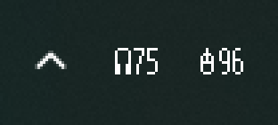

Your headset's battery, in the tray.
One small icon per wireless device, with its battery percentage. No vendor apps, no installer.

Read it at a glance
The glyph says what the device is, the number says how much battery is left. The color tells you when to care.
Works with the gear you already have
wattray talks to each device directly, the same way the vendor software does.
Logitech
Mice, keyboards and headsets on Lightspeed, Unifying or Bolt, or plugged in.
Tested on PRO X Superlight 2SteelSeries
Arctis Nova Pro, Nova 7, Nova 5, Nova 3P/3X, Arctis 7+, 7, 9 and 1/7X/7P.
Tested on Arctis Nova Pro WirelessBluetooth
Anything Windows shows a battery for in Settings, Bluetooth.
Tested on Xbox Wireless ControllerCorsair
Void family, Void Wireless V2, Virtuoso Max, HS80 Max, Virtuoso XT and SE.
HyperX
Cloud II Wireless, Cloud Alpha Wireless, Cloud Alpha 2 Wireless, Cloud Flight.
Razer
Wireless mice and keyboards that use Razer's standard protocol.
Corsair, HyperX and Razer support is ported from open source projects but not confirmed on real hardware yet. Own one? Open an issue with the output of wattray.exe --debug.
Running in a minute
- Download
wattray.exeand put it somewhere permanent, like%LOCALAPPDATA%\Programs\wattray\. - Run it. The exe is not code-signed, so SmartScreen may ask once: More info, then Run anyway.
- That's it. It starts with Windows and shows up in Start menu search.
Something reads wrong? See what wattray sees:
wattray.exe --debug
Want it gone? This closes it and removes every trace except the exe:
wattray.exe --uninstall